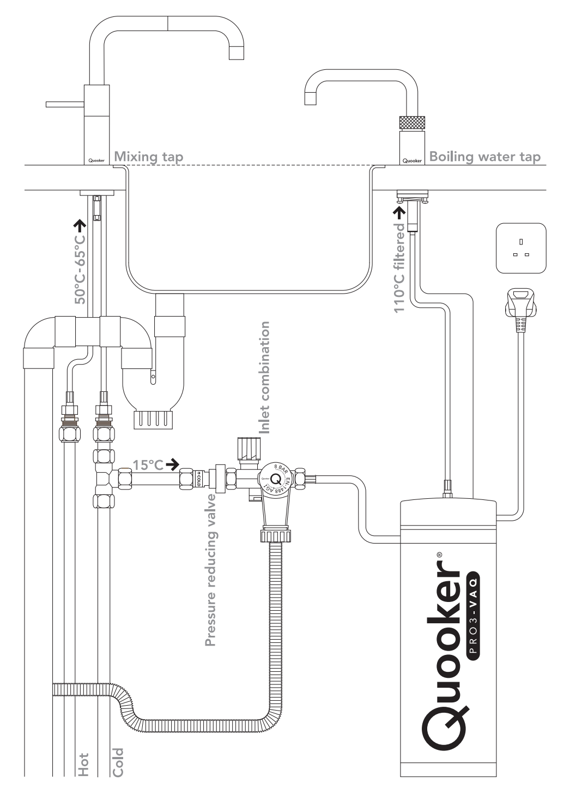

The Economics of Instant Hot Water: Quooker vs Kettle
How long will it take for an instant hot water tap to save some money?
I recently visited my cousin Robyn in the United Kingdom. In her house there was, in addition to a standard tap in the kitchen sink, a tap that dispensed boiling water instantly. It was convenient, removing almost entirely the delay between the thought of tea and the first sip. But is it economically sound compared to a simple electric kettle?
TLDR: I calculated that it would take years for the instant hot water tap to be more cost-effective than a kettle. This is because the instant hot water tap is much more expensive than a kettle up-front, and the energy savings are minimal even under an improbable use case of cups of tea per day.
Read on to see how I came to this conclusion, and play with the assumptions in order to calculate how long it would take for the Quooker to be more cost-effective than a kettle for your family.
What is an instant hot water tap?
The instant hot water tap system consists of a small, pressurised reservoir that is heated to 110 degrees Celsius and a tap to dispense the water. The system can be installed below a kitchen sink to minimise the distance and potential heat loss between the tap and the reservoir. Because the reservoir is pressurised, the water is unable to boil, even at 110 degrees Celsius. When the tap is opened, the pressure is released, and the water boils instantly.
For the remainder of the blog, I will refer to this system as a Quooker, a dutch brand which produces these taps, about which I could find the most information on the internet.

How does it compare to a kettle?
Along with convenience, the Quooker also claims to be more energy efficient than a kettle by providing the exact amount of boiling water required for a cup of tea. This is in contrast to a kettle, which is often overfilled by the user, wasting energy and water.
My goal was thus to calculate for how long these energy savings would have to accrue before the Quooker became more cost-effective than a kettle. To do this, I ask GPT-4 to help me calculate the energy consumption of both the Quooker and a standard electric kettle.
Calculating the energy consumption of the Quooker and a kettle
Assumptions
First we pin down the scenarios under which the two systems are compared. My assumptions are:
| Kettle Assumptions | Quooker Assumptions | Other Assumptions |
|---|---|---|
| My plastic kettle is rather old, and I have no idea what its efficiency is. I assume that it is % efficient. | The Quooker is % efficient. | I drink cups of tea per day. |
| I overfill my kettle by ml. | The Quooker is always on, maintaining the water at 110 degrees Celsius and using 10 Watts to do so. | The water in the kettle cools completely between each boil. |
| The kettle costs € . | The Quooker costs € . | Electricity costs € per kWh. |
Calculations
We can then calculate the energy consumption of each system. The energy consumption of the kettle is calculated as follows:
\(q = mc\Delta T\) where:
- q is the heat energy required (in Joules),
- m is the mass of the water (in kg),
- c is the specific heat capacity of water (4200 J/kg°C), and
- ΔT is the change in temperature (in °C).
We then convert the energy from Joules to kWh, and multiply by the electricity price to get the cost of boiling the kettle.
Energy (kWh) = Energy (Joules) / 3.6e6
Cost = Energy (kWh) * Cost per kWh
Plugging in the numbers, we get the following equation for the energy consumption of the kettle:
Because of overfilling the kettle, we must raise the temperature of g of water by °C each time we boil the kettle, even if we only use g of water in our tea. The kettle requires kilojoules of energy, or kWh each time we boil it. This is equivalent to € per day at cups of tea per day.
For the Quooker, we get the following energy consumption:
Because the Quooker uses 10 Watts to maintain the water at 110 degrees Celsius, it uses 0.24 kWh per day in standby. This is equivalent to € per day. In addition, we have to heat g of water to 100 degrees Celsius, which requires kilojoules of energy, or kWh for each cup of tea. This is equivalent to € per day at cups of tea per day.
So, the kettle uses € per year, and the Quooker uses € per year under our assumptions.
Given then price of the Quooker at € and the price of the kettle at € , the Quooker will pay for itself in years.
Find out for yourself
You can adjust any of these assumptions in the inputs below to see how they affect the result. The entire article is dynamic, so adjust the inputs and read it again from the top to see what the payoff period is in your case!1
How much energy is lost by each system?
| Waste Calculation | Kettle | Quooker |
|---|---|---|
| Reason for waste | Due to overfilling | Due to heat loss |
| kWh wasted per day | kWh | kWh |
| Percentage of total energy | % | % |
| Cost of waste per year | € | € |
What else do we learn?
As the number of cups of tea increases, the Quooker becomes more cost-effective than the kettle, as the wasted energy is a fixed amount, while the wasted energy of the kettle increases linearly with the number of cups of tea, assuming the overfilling remains constant.
Appendix
I have assumed that the water in the kettle cools completely between each boil. This would require 2 hours between each boil, assuming an ambient temperature of 20 degrees Celsius and a cooling constant of 0.02. The cooling constant would change based on the specific kettle/environment. See the code below for the simulation.
import matplotlib.pyplot as plt
import numpy as np
from scipy.integrate import odeint
# Define the function to compute derivative
def model(T, t):
T_ambient = 20 # Ambient temperature in degree Celsius
k = 0.02 # Cooling constant. This would change based on the specific kettle/environment
dTdt = -k * (T - T_ambient)
return dTdt
T0 = 100 # Starting temperature of the water in degree Celsius
t = np.linspace(0, 120, num=500) # Time points in minutes. Here we simulate for 2 hours
# Solve the ODE
T = odeint(model, T0, t)
# Plot the results
plt.plot(t, T)
plt.xlabel('Time (minutes)')
plt.ylabel('Temperature (°C)')
plt.title('Cooling of Boiled Water in a Kettle Over Time')
plt.grid(True)
plt.show()
Footnotes
If for instance, you drink 25 cups of tea per day, the Quooker will pay for itself in 12.5 years.↩︎